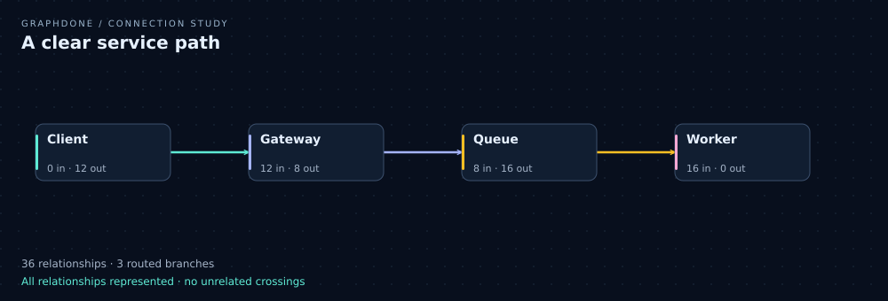
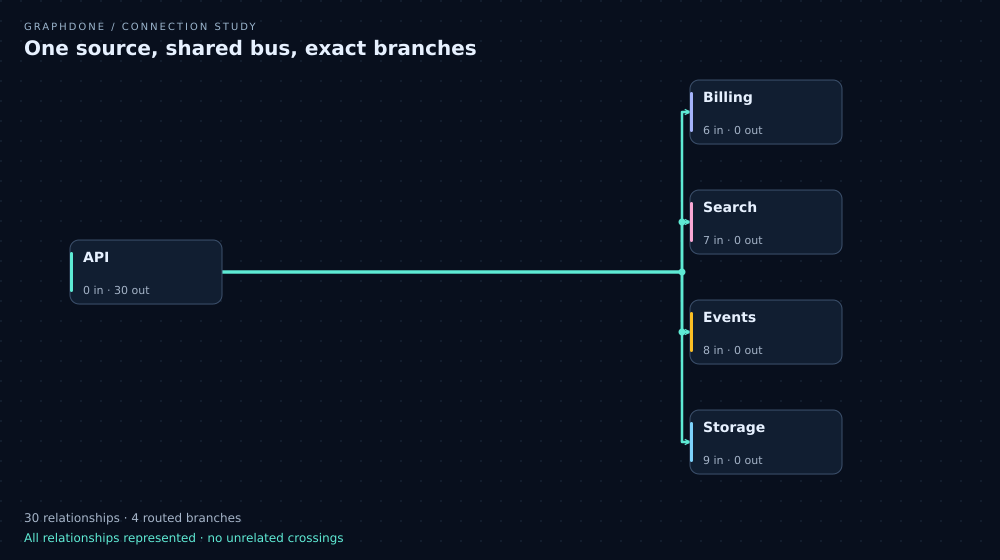
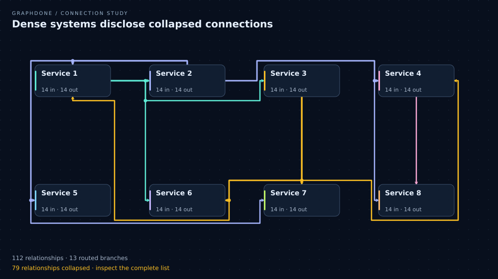
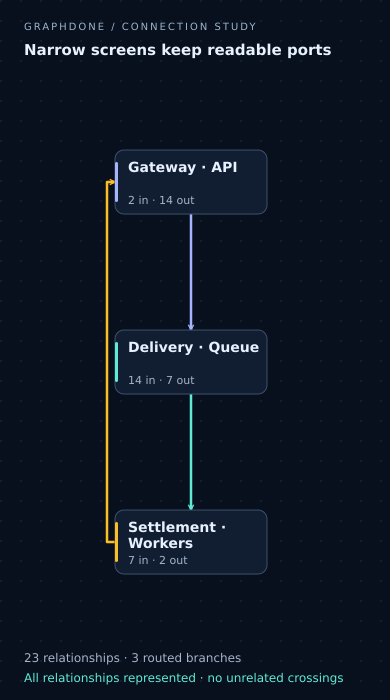

A clear service path

36 represented + 0 collapsed = 36 original relationships.
{"cardIntersections":0,"unrelatedCrossings":0,"unrelatedOverlaps":0,"diagonalSegments":0,"maxBusesPerCell":1}Small routing studies from GraphDone's candidate production routing module. Shared colors and junction dots mark an intentional source bus. Arrowheads preserve direction. Dense views disclose every collapsed relationship; the exact list remains required for production integration. These are visual fixtures, not a shipped application claim.
Geometry and relationship accounting · Deliberate spaghetti fixture rejected: 2 card intersections, 3 unrelated crossings, 1 unrelated overlaps.

36 represented + 0 collapsed = 36 original relationships.
{"cardIntersections":0,"unrelatedCrossings":0,"unrelatedOverlaps":0,"diagonalSegments":0,"maxBusesPerCell":1}
30 represented + 0 collapsed = 30 original relationships.
{"cardIntersections":0,"unrelatedCrossings":0,"unrelatedOverlaps":0,"diagonalSegments":0,"maxBusesPerCell":1}
33 represented + 79 collapsed = 112 original relationships.
{"cardIntersections":0,"unrelatedCrossings":0,"unrelatedOverlaps":0,"diagonalSegments":0,"maxBusesPerCell":2}
23 represented + 0 collapsed = 23 original relationships.
{"cardIntersections":0,"unrelatedCrossings":0,"unrelatedOverlaps":0,"diagonalSegments":0,"maxBusesPerCell":1}